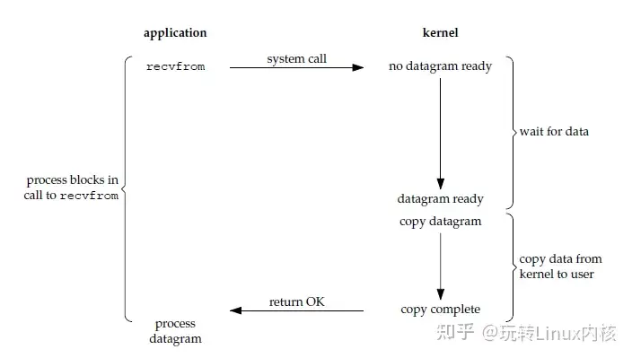
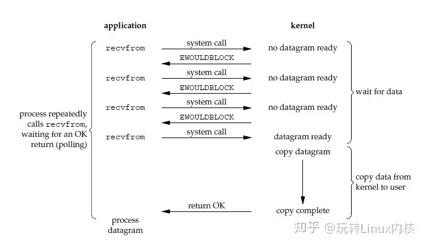
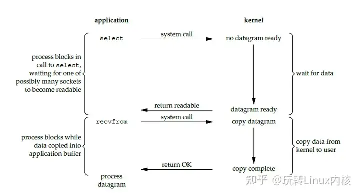
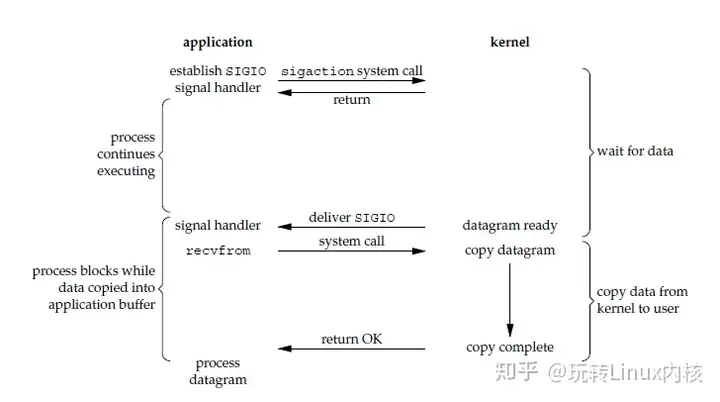
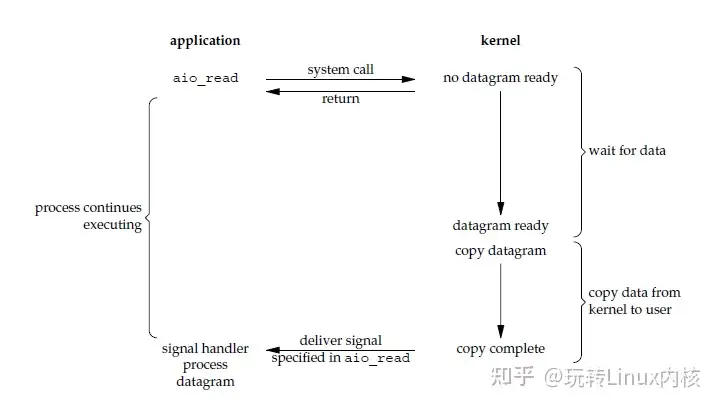
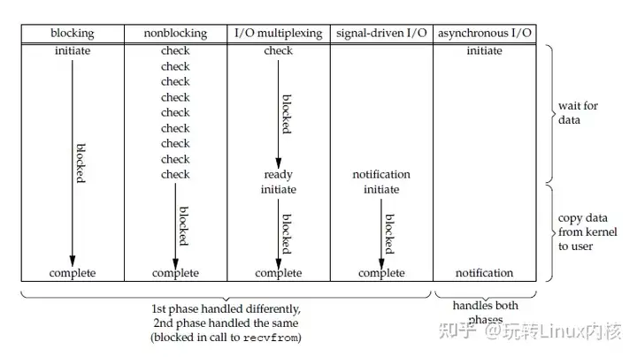

00所有差异，都发生在两个阶段
socket 输入并不是“调用一次 read 就完成”的单一动作。网络数据先到达 Linux 内核，进入内核缓冲区；随后内核再把数据复制到应用程序传入的用户缓冲区。五种 I/O 模型，本质上是在重新分配：谁等待数据，谁等待复制完成。
buf。问题是：此时应用是否仍需参与并等待？recvfrom/read 并参与复制；异步 I/O 的通知意味着数据已经被复制到用户缓冲区。recvfrom() 在表达什么？
ssize_t recvfrom(int sockfd, void *buf, size_t len,
int flags, struct sockaddr *src_addr,
socklen_t *addrlen);这里最重要的是三个角色：sockfd 表明“读哪个连接”，buf 表明“把数据放到哪里”，len 限制“最多复制多少”。调用模型不同，改变的是调用返回的时机；数据最终仍需从内核空间进入这个 buf。
01五种 I/O 模型：把“等待”放在哪里
| 模型 | 等待数据 | 复制数据 | 一句话理解 |
|---|---|---|---|
| 阻塞 I/O | 阻塞 | 阻塞 | 一直等到数据读完。 |
| 非阻塞 I/O | 不阻塞，没数据即返回 | 阻塞 | 不等，但需要反复问。 |
| I/O 复用 | 阻塞在 select/poll/epoll | 阻塞 | 一个线程等多个 socket。 |
| 信号驱动 I/O | 内核等待，数据到达时发信号 | 阻塞 | 通知我“可以读了”。 |
| 异步 I/O | 不阻塞 | 不阻塞 | 内核完成后才通知。 |
调用 recvfrom() 后，若数据未到，当前线程睡眠。数据到达并复制到 buf 后函数才返回。阻塞的是当前线程，不是整个系统；简单的代价是连接数多时，不能让每个连接都各自等待。

数据尚未准备好时，内核立即以 EAGAIN 或 EWOULDBLOCK 返回。应用可继续做别的事，稍后再次调用；代价是轮询带来更多系统调用，也可能浪费 CPU。

应用把多个 socket 交给 select、poll 或 epoll，阻塞等待“哪一个已就绪”。返回后，应用再对就绪 socket 调用 recvfrom/read。它适合一个线程管理许多连接，但本质仍是同步 I/O。

应用注册 SIGIO 后继续运行；数据到达时内核发送信号，应用随后调用 recvfrom()。它避免了持续轮询，但信号不是“读完了”的通知，复制阶段仍由应用触发。

应用提交 aio_read 后立即返回。内核负责等待数据、完成复制，再通知应用。这是它与信号驱动最关键的分界：通知不是“现在能读”，而是“数据已经到了你的 buf”。


最容易混淆的是 I/O 复用、信号驱动和异步 I/O。I/O 复用返回“某些 fd 可读”；信号驱动通知“这个 fd 可以读”；异步 I/O 通知“数据已经读完”。只要追问第二阶段由谁完成，判断就会稳定。
02I/O 复用：select、poll、epoll
三者都用于“等待多个 fd 的事件”，区别主要在于 fd 集合如何交给内核，以及就绪结果如何取回。
| select | poll | epoll | |
|---|---|---|---|
| 监听集合 | fd_set | pollfd 数组 | 先用 epoll_ctl 注册 |
| 每次调用 | 传入并扫描集合 | 传入并扫描数组 | 等待已注册事件 |
| 限制 | 常见 FD_SETSIZE 限制 | 无该集合位图限制 | Linux 特有 |
| 适用 | 少量 fd、可移植性 | 中等数量 fd | 大量长连接、低活跃比例 |
select：集合小、移植性优先
select 将读、写、异常 fd 集合交给内核，在指定超时内等待。返回后应用需要检查哪些位被置位。它的主要限制是 fd_set 的规模，且每轮都要处理整组描述符。
poll：摆脱固定集合位图
poll 使用 struct pollfd 数组记录 fd 和关注事件，没有 FD_SETSIZE 这种位图限制。但它仍要让内核和应用在每轮扫描这份数组。
epoll：注册一次，等待就绪
int epoll_create(int size);
int epoll_ctl(int epfd, int op, int fd, struct epoll_event *event);
int epoll_wait(int epfd, struct epoll_event *events,
int maxevents, int timeout);epoll_create() 创建实例；epoll_ctl() 添加、删除或修改监听 fd；epoll_wait() 取回就绪事件。它不是每次调用都重新提交整组 fd，而是先注册、后等待，因此很适合大量、长期存在而活跃比例较低的连接。
struct epoll_event ev = {0};
ev.data.ptr = connection;
ev.events = EPOLLIN | EPOLLONESHOT;
epoll_ctl(epfd, EPOLL_CTL_ADD, connection->getSocket(), &ev);
int ready = epoll_wait(epfd, events, 20, 10000);
for (int i = 0; i < ready; ++i) {
if (events[i].events & EPOLLIN) {
((Connection *)events[i].data.ptr)->handleReadEvent();
}
}pollingfd，后续却使用 epollfd；等待结果也出现 ret 与 ready 混用。概念不受影响，但正式代码必须统一变量名并处理错误返回。03epoll 的 LT 与 ET
LT：Level Trigger，水平触发
LT 是默认模式。只要 fd 仍处于可读状态，下一次 epoll_wait() 仍会通知。例如 socket 有 100 字节、应用只读走 50 字节，剩下的 50 字节仍会使这个 fd 保持可读。它更稳，也不容易漏处理。
ET：Edge Trigger，边缘触发
ET 只在状态从“不可读”变为“可读”时通知一次。收到事件后必须持续 read/recv，直到返回 EAGAIN；否则数据尚未读尽却没有新的状态变化，后续可能不再被提醒。
收到 EPOLLIN
→ 循环 read / recv
→ 直到返回 EAGAIN
→ 当前缓冲区读尽，回到事件循环ET 必须配合非阻塞 fd。否则一次读取可能阻塞住事件循环，其他连接便失去处理机会。
04如何选择：不要只问“哪个更快”
| 情况 | 更合适的选择 | 原因 |
|---|---|---|
| fd 少、强调跨平台 | select | 接口普遍可用，理解成本低。 |
| fd 可能超过 select 默认限制 | poll | 不依赖 fd_set 位图大小。 |
| Linux 上大量长连接，活跃 fd 比例低 | epoll | 注册与就绪等待分离，避免反复提交整组 fd。 |
| fd 很少或状态剧烈变化 | 未必需要 epoll | epoll_ctl 本身也有维护成本。 |
选择并非纯粹的性能题。平台、连接生命周期、活跃连接比例、事件循环复杂度与团队维护成本，都比“听说 epoll 很快”更值得先问。
05读完要记住什么
- socket 输入先等待数据、再复制数据；以这两步为坐标系理解模型。
- 非阻塞不等于异步；前者只是没数据就立即返回。
- I/O 复用复用的是等待多个 socket 的能力，读取与复制仍由应用参与。
- 信号驱动通知“可以读”，异步 I/O 通知“已完成”。
epoll适合 Linux 的大量长连接；ET 需要非阻塞 fd，并读到EAGAIN。
本文基于 OpenClaw 阅读笔记重新编辑与排版。原始资料：知乎专栏《Linux 内核看 socket 底层的本质》。配图来自原笔记对应引用，已保存为本文本地资源。